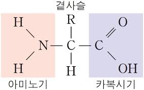
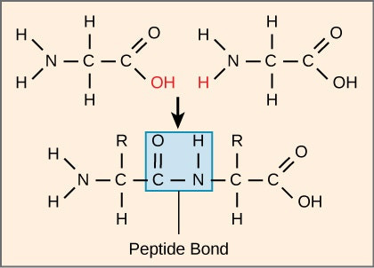
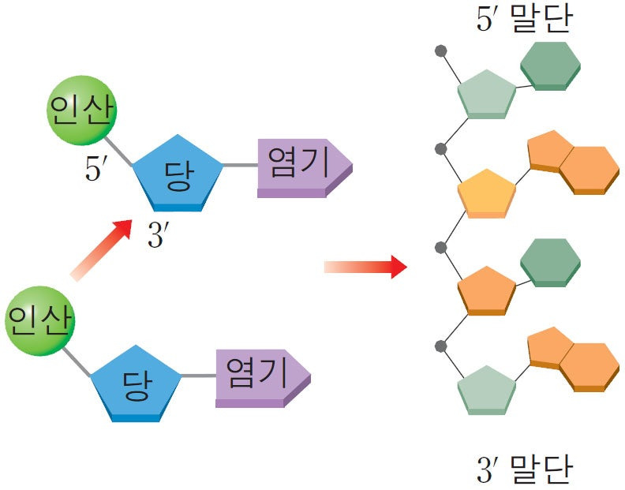
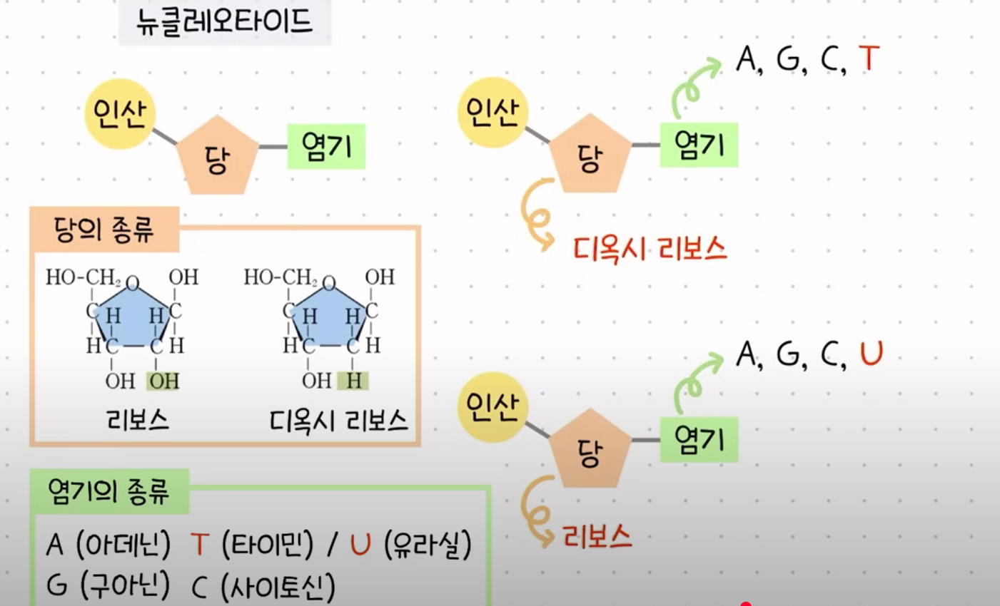
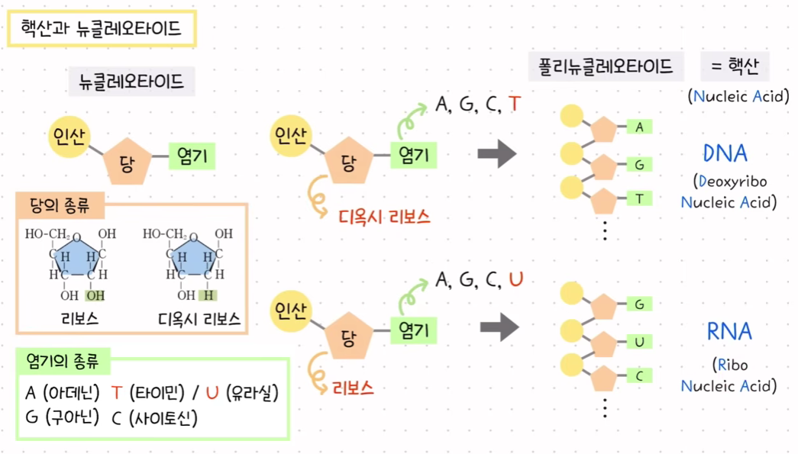
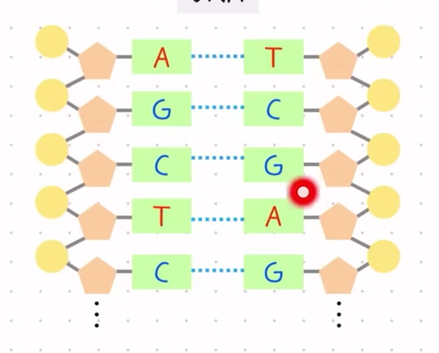
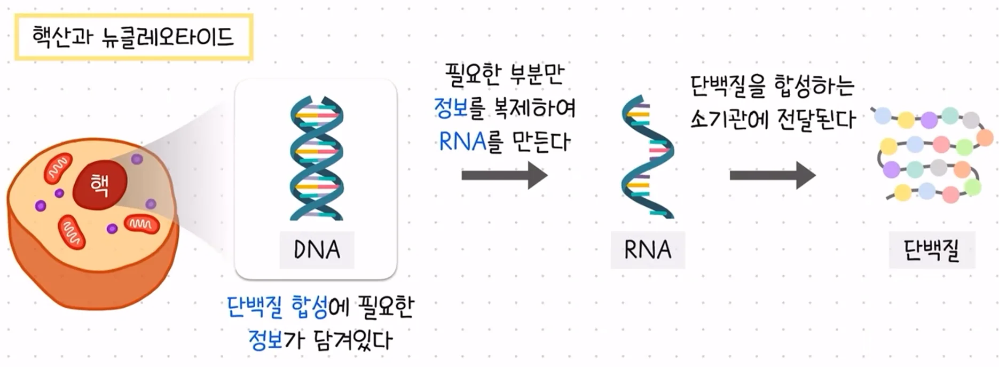
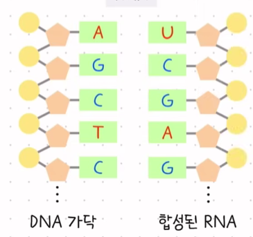
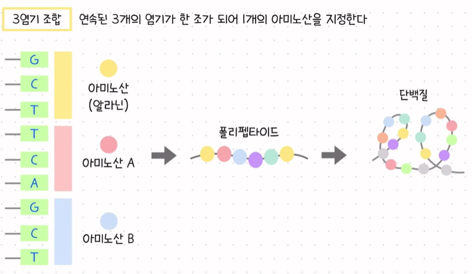
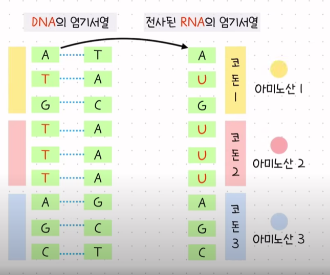

Biochemical-1 (The Central Dogma)
유전적으로 당신은 DNA 때문에 ‘당신’입니다. 하지만 DNA는 어떻게 당신을 ‘당신’이 되게 할까요? 이 강의에서 당신은 DNA가 단백질을 만드는 기본 원리와, 핵산과 단백질의 분자 구조를 조사하는 법을 배우게 됩니다.
20세기에 생체 분자에 대한 우리의 이해가 증가함에 따라, 연구자들은 모든 생명체가 유전 암호를 공유한다는 것을 발견했습니다. 1956년에 프랜시스 크릭은 DNA가 스스로 복제할 수 있는 정보 저장 분자라고 제안했습니다. 더 나아가 그는 전달된 정보가 세포 내의 제조 기관에 의해 읽혀야 하며, 그 기관이 아미노산을 특정한 서열로 모아 궁극적으로 단백질을 합성한다고 제안했습니다. 이는 분자생물학의 중심 원리로 알려지게 되었습니다.
1.DNA와 RNA, 단백질
 
단백질은 아미노산=아미노기+카복실기+곁사슬이 연결되어 만들어진다. 이때 곁사슬의 종류에 따라 류신 글루타민 등으로 불린다. 이러한 아미노산은 2개가 만나면 아미노기와 카복실기가 만나서 물을 빼고 결합하는 펩타이드 결합이란 것을 한다. 이렇게 길어지면서 폴리펩타이드가 만들어진다. 폴리펩타이드가 모여 하나 혹은 여러 개의 폴리펩타이드가 접히고(2차·3차 구조), 경우에 따라 여러 개가 모여(4차 구조) 특정한 입체 구조와 기능을 가진 상태를 최종적으로 단백질이라고 부른다.

핵산은 뉴클레오타이드로 구성된다. 이는 인산-당-염기로 구성되어있는데, 당의 종류로는 리보스와 디옥시 리보스가 있다. 당의 종류에 따라 염기가 결정이 된다.

뉴클레오타이드도 서로 연결될 수 있으며 폴리뉴클레오타이드를 핵산이라고 부른다.

이때 폴리뉴클레오타이드에 당이 디옥시리보스면 DNA가 되고 리보스면 RNA가 된다. DNA와 RNA는 당이 다르고, 염기도 T/U의 차이가 있다. 또 DNA는 OH가 없어 안정해서 두 가닥으로 꼬여있는 이중나선 구조를 가진다. RNA는 한가닥이다.

DNA는 상보결합을 하며 AT(U)/GC로 결합한다.
DNA는 생물의 모든 특성을 이루는 유전정보를 저장하고 있다. DNA가 배열될 때 염기가 어떤 순서로 배열되어 있는지, 염기의 서열이 곧 유전정보가 된다. 특히 우리몸을 구성하는 단백질의 원료인 아미노산을 만들기 위한 정보도 DNA의 염기서열에 담겨있다. 예를 들어 DNA염기가 GCT로 배열되어있으면 알라닌이라는 단백질을 만들 수 있다. 이런식으로 DNA속 정보를 읽어서 아미노산을 만들고 단백질을 합성한다. DNA는 핵속에 들어있는데, 단백질을 합성하는 소기관은 핵 밖에 있다?

그래서 DNA에 있는 정보중 단백질 합성에 필요한 부분적인 정보만 담은 복제본을 만드는데, 이것이 RNA이다. 이를 핵 바깥에 있는 소기관에 전달하면 RNA에 담긴 염기서열에 따른 단백질을 생성한다. 즉 RNA는 임시 메신저의 기능을 한다. ( 그 외에도 더 함)

이때 RNA는 만들어질 때 상보적으로 만들어진다. AU/GC
2. DNA로부터 단백질이 만들어지는 과정
사람마다 다양한 형질이 나타나는 이유는 DNA에 가지고 있는 유전정보가 다르기 때문이다. 모든 생물은 DNA가 세포의 핵속에 있다. 이는 실처럼 길게 풀어진 형태로 존재한다. 모든 세포는 처음 수정란(zygote)에서 세포분열을 통해 만들어졌고 분열 과정에서 DNA는 복제되어 각 세포에 전달되므로 사람의 체세포속 DNA는 모두 같은 배열을 가진다. 이 DNA 긴 가닥은 사람의 한 체세포에 46개가 들어있다. DNA에 유전정보가 있는 특정 부분을 유전자라고 하며 여기에 저장된 유전 정보에 따라 사람을 구성하는 단백질이 합성되고, 이에 따라 형질이 발현한다. 효소, 호르몬, 헤모글로빈, 눈 색상 효소 등 거의 모든 것에 단백질이 관여하므로, 이 단백질을 만드는 과정이 매우 중요하다.
DNA는 인산 당 염기로 구성되어 있고 이들이 연결되어 폴리뉴클레오타이드가 된다. 이 것 두 가닥이 염기끼리 상보결합하여 DNA가 된다. DNA의 유전자에 단백질을 합성하는 정보가 담겨있다고 했는데, 이는 염기 순서를 의미한다. 연속된 3개의 염기가 한 조가 되어 1개의 아미노산을 지정할 수 있다.

이를 3염기 조합이라고 하며 염기 배열 순서에 따라 3개당 1 아미노산이 생성되고 이것들이 모여 폴리펩타이드-단백질이 만들어진다. 그런데 어떻게 만들까? 이건 전사와 번역이라고 불리는 과정으로 일어난다.
단백질을 만들기 위한 정보는 세포의 핵속에 있는 DNA의 염기 서열에 담겨있다. 그러나 만드는 기관은 리보솜이다. 따라서 핵 속에서 DNA의 이중 나선 중 한 가닥으로부터 복사본인 RNA를 전사하여 만든다. 이는 DNA의 정보 중 단백질 합성에 필요한 부분만 짜른 것이다. 이렇게 전사해서 만든 RNA는 DNA한 가닥과 동일한 유전정보를 담고 있다.

이후 RNA에서 3개의 염기가 1개의 아미노산을 지정하며 이를 코돈이라고 한다. RNA의 코돈이 아미노산을 지정하여 이들이 순서대로 연결되면서 단백질이 합성된다. 이 과정은 리보솜에서 일어난다. 전사과정을 통해 만들어진 RNA가 핵 바깥으로 나가서 리보솜과 결합한다. 리보솜에서는 RNA의 염기서열, 즉 코돈이 지정하는 아미노산이 만들어진다. 이를 번역이라고 한다.
----------------------------
구체적으로 DNA는 전사라고 알려진 과정에서 메신저 RNA 분자(mRNA)의 직접 합성을 위한 주형 역할을 합니다. 둘째로, mRNA는 리보솜에서 전달 RNA들(transfer RNA, tRNA)에 의해 읽히며, tRNA들은 함께 작동하여 특정한 아미노산 사슬을 조립하는데, 이는 모여서 단백질을 생성하는 번역이라는 과정에서 이루어집니다.
단백질은 세포의 내부 기계장치로, 자동차의 부품과 유사합니다. 각 단백질은 그 기능을 결정하는 특정한 삼차원 형태를 가지고 있습니다. 형태의 어떤 변화도 잠재적으로 단백질의 기능을 변화시킬 수 있습니다. 전사와 번역을 컴퓨터에서 에세이를 출력하는 것에 비유해 보십시오. 에세이가 완성되면, 당신은 그 문서를 하드 드라이브에 저장하는데, 이는 DNA와 유사합니다. 하드 드라이브는 정보를 저장합니다—DNA는 유전적 저장 분자입니다. 컴퓨터의 데이터는 이진 언어로 저장됩니다. 에세이를 출력할 때가 되면, 당신은 컴퓨터에 프린터로 메시지를 보내라는 명령을 보냅니다. 이 메시지는 mRNA—유전적 메시지 분자—에 해당합니다. 프린터로 보내지는 이진 메시지와 유사하게, DNA와 RNA는 뉴클레오타이드를 기반으로 한 화학적 언어를 공유합니다. 따라서 DNA에서 RNA로의 정보 교환이 전사라고 불리며, 같은 언어 내에서의 정보 교환입니다. 일단 정보가 프린터에 도착하면, 그것은 이진 언어에서 다른 언어—잉크의 언어—로 번역됩니다. 마찬가지로 mRNA는 리보솜에 의해 읽히고 단백질의 언어로—아미노산으로 이루어진—번역됩니다. 따라서 RNA에서 단백질로의 과정은 뉴클레오타이드의 언어에서 아미노산의 언어로 번역되는 것이므로 번역이라 알려져 있습니다. 리보솜은 번역 과정이 이루어지는 시설로서 프린터에 해당합니다. 실제로 리보솜에서 mRNA를 번역하는 분자들은 다른 종류의 RNA, 즉 전달 RNA(tRNA)입니다. 번역 과정에서 tRNA는 mRNA를 읽고 특정 아미노산을 성장하는 단백질에 연결합니다. 당신의 에세이가 당신의 생각을 나타내려면, 잉크는 물리적으로 특정한 방식으로 배열되어야 합니다. 글자의 위치에 어떤 오작동이 있으면 같은 생각을 전달하지 못할 것입니다. 이와 유사하게 단백질은 그 기능을 결정하는 특정한 삼차원 형태를 가지고 있습니다. 그 형태의 어떤 변화도 잠재적으로 기능을 바꿀 수 있습니다. 우리의 비유에서 DNA는 하드 드라이브에 저장된 파일이고, mRNA는 프린터로 보내진 메시지이며, 프린터는 리보솜이고, 에세이는 단백질이며, 글자들은 아미노산을 나타냅니다. DNA는 간접적으로 단백질을 암호화합니다. DNA는 전사와 번역의 모든 중간 역할들을 직접 만들어 냅니다. DNA의 일상적 기능은 RNA 분자들을 생산하는 것입니다. 메신저 RNA는 DNA의 특정 구간에 의해 직접 생성되는데, 그 DNA 구간을 유전자라고 합니다. mRNA는 단백질과 또 다른 종류의 RNA인 리보솜 RNA(rRNA)로 이루어진 리보솜으로 이동합니다. 리보솜에서 mRNA는 정확한 서열로 특정 아미노산들을 연결함으로써 단백질 합성을 위한 코드로서 기능합니다. 아미노산 사슬 전체의 집합이 단백질입니다. DNA는 또한 새로운 세포의 생성을 위해 필요한 자기복제도 할 수 있습니다.
DNA와 RNA는 핵산으로 알려진 생체 분자입니다. 핵산과 단백질은 모두 고분자(폴리머)이며, 반복되는 분자들이 연결된 사슬로 이루어진 분자입니다. 그 반복 구성 요소들을 단량체(모노머)라고 합니다. 핵산의 단량체는 뉴클레오타이드이며, 이는 당, 인산기, 질소 염기라는 세 가지 구성 요소로 이루어져 있습니다. 디옥시리보핵산(DNA)은 디옥시리보뉴클레오타이드라는 단량체들로 이루어진 이중 가닥 핵산입니다. 디옥시리보뉴클레오타이드는 세 가지 구성 요소, 즉 인산기, 당 디옥시리보스, 그리고 네 가지 질소 염기 중 하나로 이루어져 있습니다. 인산기와 디옥시리보스는 다양한 디옥시리보뉴클레오타이드에서 동일하지만, DNA는 네 가지 다른 질소 염기—아데닌(A), 티민(T), 시토신(C), 구아닌(G)—을 담고 있습니다. 이 네 가지 서로 다른 뉴클레오타이드가 유전 정보 저장의 ‘문자’로서 기능하며, mRNA로 전사되고 결국 리보솜에서 읽혀 단백질을 생성합니다. 지구상의 모든 생물학적 다양성은 단지 네 글자만 가진 생명의 언어에 기반합니다. 이 질소 염기들은 그들의 형태에 따라 분류될 수 있습니다. 티민과 시토신은 각각 단일 탄소 고리 뼈대를 가지고 있어 피리미딘이라 불리는 반면, 아데닌과 구아닌은 서로 연결된 두 개의 탄소 고리 뼈대(하나는 6원, 다른 하나는 5원)를 가지고 있으며 퓨린이라 불립니다.
리보핵산(RNA)은 단일 가닥 핵산 고분자이며, 리보뉴클레오타이드라는 단량체들로 이루어져 있습니다. 리보뉴클레오타이드는 두 가지 점에서 디옥시리보뉴클레오타이드와 동일하지 않습니다. 첫째, 리보뉴클레오타이드는 2′ 탄소에 하이드록시기가 있는 당 리보스를 가지며, 디옥시리보스는 그 위치에 수소 원자를 가집니다. 리보스와 디옥시리보스의 탄소들은 산소로부터 시계 방향으로 1′에서 5′까지 표기됩니다. 1′ 탄소는 질소 염기에 연결됩니다. 2′ 탄소에 붙은 원자들은 리보스와 디옥시리보스 사이에서 다릅니다. 2′ 탄소에서 시계 방향으로 3′ 탄소, 그 다음 4′ 탄소가 있고, 5′ 탄소는 인산기에 연결됩니다. 따라서 RNA의 당인 리보스에 비해 DNA의 당인 디옥시리보스는 2′ 탄소에서 산소 하나가 부족합니다. 그 단 하나의 차이가 세포가 이 두 뉴클레오타이드를 구분할 수 있게 해 줍니다. 둘째, 리보뉴클레오타이드는 그들의 질소 염기 구성에서 다릅니다. 세 개의 리보뉴클레오타이드는 디옥시리보뉴클레오타이드와 같은 질소 염기(시토신, 구아닌, 아데닌)를 가지는 반면, 네 번째 리보뉴클레오타이드는 우라실이라는 질소 염기로 이루어져 있습니다. 우라실은 티민과 매우 유사하지만, 우라실의 특정 위치(여기서는 원문 표현에 따르면 ‘3′ 위치’라고 언급됨)에 수소 원자가 있는 반면 티민은 그곳에 메틸기(CH₃)를 가지고 있습니다. 인산기는 리보뉴클레오타이드와 디옥시리보뉴클레오타이드 모두에서 동일합니다.
뉴클레오타이드는 긴 사슬로 서로 연결되어 핵산을 형성합니다. 개별 뉴클레오타이드는 한 뉴클레오타이드의 당의 3′ 탄소와 인접한 뉴클레오타이드의 인산기의 인 사이에 형성되는 공유 결합으로 연결됩니다. 이 반응에서 3′ 탄소로부터 수소 원자 하나가 제거되고, 인산기로부터 하이드록실기가 제거됩니다. 이 부산물들이 결합하여 물을 형성하는데, 이를 축합 반응이라고 합니다. 이 반응 이후 두 뉴클레오타이드는 인산기가 원래 뉴클레오타이드의 5′ 탄소와 인접 뉴클레오타이드의 3′ 탄소에 연결되는 인산디에스터 결합에 의해 연결됩니다. 세 번째 뉴클레오타이드를 더하면, 핵산은 형태를 갖추기 시작합니다. 이 발달 중인 핵산에서, 인산은 당에 붙어 있고, 그 당은 인산에 붙어 있고, 그 인산은 당에 붙어 있으며, 이와 같이 계속됩니다. 인산디에스터 연결은 뉴클레오타이드의 세 구성 요소 중 두 가지—인산과 당—를 포함합니다. 핵산의 골격(백본)에서 옆으로 돌출되어 있는 것은 질소 염기들입니다. 이 반복 패턴이 핵산의 골격을 형성합니다. 핵산 가닥의 한쪽 끝은 인산기에 의해 제한되고, 반대쪽 끝은 당에 의해 제한되어 DNA와 RNA에 방향성을 부여합니다. 핵산의 인산기로 끝나는 말단은 그 분자의 끝에 가장 가까운 탄소가 5′ 탄소이기 때문에 가닥의 5′ 말단이라 부릅니다. 골격의 반대쪽 끝에는 당 말단이 있으며, 이를 3′ 말단이라 합니다. 핵산에서 뉴클레오타이드의 서열은 1차 구조라고 알려져 있습니다. 과학자들은 핵산의 1차 구조 표기를 표준화하여, 뉴클레오타이드를 5′ 말단에서 3′ 말단까지—5′에서 3′—나열합니다. 예를 들어 RNA의 한 구간 아데닌, 구아닌, 구아닌, 우라실, 아데닌, 시토신은 A G G U A C로 표기됩니다.
RNA(리보핵산)는 리보뉴클레오타이드로 구성된 단일 가닥 핵산입니다. RNA의 골격은 5′ 말단에서 인산기, 3′ 말단에서 당 리보스에 의해 제한됩니다. 각 리보뉴클레오타이드는 네 가지 질소 염기—아데닌, 우라실, 시토신, 구아닌—중 하나를 가집니다. RNA 분자들은 주로 단백질을 능동적으로 합성하는 역할을 맡습니다. DNA는 메신저 RNA(mRNA)를 합성하여, DNA로부터 리보솜으로 유전 정보를 전달합니다. mRNA의 1차 서열은 결과 단백질에서 아미노산의 서열을 결정합니다. 리보솜은 단백질과 또 다른 종류의 RNA인 리보솜 RNA(rRNA)로 이루어진 복합체입니다. 리보솜에서 mRNA는 세 번째 종류의 RNA인 전달 RNA(tRNA)에 의해 읽히고 해독됩니다. 진핵생물에서는 전사 후 번역 전에 mRNA를 수정하는 데 작은 핵 RNA(snrna)가 관여합니다.
DNA는 디옥시리보뉴클레오타이드로 구성된 이중 가닥 핵산으로, 리보뉴클레오타이드와는 디옥시리보스라는 서로 다른 5탄당을 가진다는 점에서 다릅니다. 생물에서 네 가지 디옥시리보뉴클레오타이드는 질소 염기에서 차이를 가지며, 아데닌, 티민, 시토신, 구아닌입니다. DNA의 1차 구조가 확립되자, 다음 질문은 뉴클레오타이드들이 DNA 분자를 만들기 위해 어떻게 배열되는가, 즉 DNA의 2차 구조는 무엇인가 하는 것이었습니다. DNA의 2차 구조의 발견은 20세기의 가장 중요한 생물학적 발견 중 하나였습니다. 첫 번째 실마리 중 하나는 1950년대 초 어윈 샤가프가 다양한 생물에서 디옥시리보뉴클레오타이드의 상대적 풍부함을 비교하여 수행한 분석에서 나왔습니다. 샤가프는 구아닌의 상대적 풍부함이 시토신과 같고, 아데닌의 상대적 풍부함이 티민과 같다는 것을 발견했습니다. 가장 흥미로운 점은 그가 이 관계를 서로 다른 많은 종들에서 발견했다는 것입니다. 샤가프의 발견은 과학자들이 DNA의 2차 구조를 밝혀내는 데 결정적이었습니다. 제임스 왓슨과 프랜시스 크릭은 샤가프의 증거가 DNA에서의 염기쌍 형성을 강하게 지지한다고 제안했는데, 여기서 디옥시리보뉴클레오타이드의 아데닌은 티민에, 구아닌은 시토신에 결합한다는 것입니다. 게다가 왓슨과 크릭은 디옥시리보뉴클레오타이드의 염기쌍 형성이 DNA가 이중 가닥일 가능성을 시사한다고 가설을 세웠습니다.
DNA의 실제 분자 형태에 대한 증거를 얻기 위해, 로절린드 프랭클린과 모리스 윌킨스는 DNA에 X선을 쏘아 방사선이 어떻게 산란되는지를 분석했는데, 이는 X선 회절(원문에서는 ‘크로마토그래피’로 표기되었으나 통상 ‘회절’이 맞습니다)이라고 알려진 기법입니다. 이 기법에서 나온 산란 패턴의 분석을 통해 그들은 DNA의 원자들 사이의 거리를 측정할 수 있었고, 세 가지 결론에 도달했습니다. 첫째, DNA는 일정한 폭을 가진다. 둘째, DNA 내부에는 반복되는 패턴이 있다. 셋째, 그 분자는 나선형이어야 한다. 프랭클린과 윌킨스와의 협력 하에, 왓슨과 크릭은 디옥시리보뉴클레오타이드 구성 요소들의 기하학을 정의하기 위해 측정값들을 사용했고, 실제로 뉴클레오타이드들의 종이 모형을 만들어 다양한 배열을 만지작거리며 다음 네 가지를 설명하려 했습니다: (1) 샤가프의 법칙, (2) 일정한 폭, (3) 뉴클레오타이드의 반복 패턴, (4) DNA의 나선형 형태. A와 T, C와 G의 염기쌍이 서로 나란히 배열되고, 가닥들이 서로 반대 방향으로 달릴 때 모든 발견을 설명할 수 있었습니다. 다시 말해, 왓슨과 크릭은 DNA가 두 가닥으로 구성되며, 하나는 5′에서 3′로, 다른 하나는 3′에서 5′로 달리며 서로 연결된다고 제안했습니다. 이 방향성은 역평행(anti-parallel)이라 불립니다. 핵산의 골격은 인산과 디옥시리보스 당이 번갈아 이루며, 가닥의 5′ 말단에는 인산이, 3′ 말단에는 디옥시리보스가 있습니다. 두 가닥은 이중 나선을 형성하도록 꼬이며, 바깥쪽은 반대 방향으로 달리는 두 핵산 골격이 경계를 이루고, 질소 염기들은 안쪽을 향합니다. 샤가프의 발견에 근거하여 왓슨과 크릭은 서로 인접한 DNA 가닥의 질소 염기들이 염기쌍에 따라 연결된다고 결론지었습니다. DNA의 일정한 폭의 발견 또한 A-T와 C-G 염기쌍을 지지했습니다. 아데닌과 구아닌은 서로 다른 분자이지만 둘 다 퓨린으로 크기와 형태가 대략 비슷합니다. 시토신과 티민도 마찬가지로 둘 다 피리미딘입니다. 그러나 퓨린은 더 큰 ‘8자’ 구조(두 개의 고리)이고, 피리미딘은 더 작은 단일 고리 구조입니다. DNA의 폭이 질소 염기들의 다양한 형태에도 불구하고 일정하려면, 퓨린은 피리미딘과 결합해야 합니다. 퓨린-퓨린 염기쌍은 관찰된 것보다 더 큰 분자 폭을 만들고, 피리미딘-피리미딘 염기쌍은 너무 작게 만듭니다. 그렇다면 퓨린인 구아닌이 왜 항상 피리미딘인 시토신과 결합하고, 같은 피리미딘인 티민과는 결합하지 않는가? 왜 퓨린인 아데닌은 시토신과 결합하지 않는가? 왓슨과 크릭은 뉴클레오타이드의 물리적 모형을 가지고, 인접 가닥의 질소 염기들이 전기음성도의 차이 때문에 수소 결합에 의해 서로 결합된다는 것을 추론했습니다. 질소 염기들의 수소는 부분 양전하를 띠고, 산소와 질소는 부분 음전하를 띱니다. 인접한 질소 염기들 사이에서 부분 양전하와 부분 음전하 원자들 사이에 수소 결합이 형성됩니다. 이 네 가지 질소 염기의 형태와 상호작용을 조사한 결과, 구아닌과 시토신은 기하학적 상보체이며 세 개의 수소 결합으로 결합하고, 아데닌과 티민은 두 개의 수소 결합으로 결합한다는 것을 발견했습니다. 본질적으로 A-T와 C-G의 결합은 분자 형태의 상보성과 수소 결합 방향성 때문에 다른 어떤 조합보다 더 안정적입니다.
이제 단백질을 더 자세히 살펴봅시다. 단백질은 생물에서 세포 기계로 작동하는 생체 분자입니다. 이 큰 분자들은 세포 신호전달, 화학 반응 촉매, 분자 수송 등 많은 다른 기능에 관여하는 특정한 삼차원 구조를 가집니다. 단백질은 아미노산이라는 단량체의 긴 사슬로 이루어진 고분자입니다. 알려진 500여 개의 아미노산 중 오직 20개만이 생물의 단백질에 나타납니다. 아미노산은 비교적 단순한 유기 분자로, 단일 공유 결합으로 중심 탄소에 네 가지가 결합합니다: (1) 수소 원자, (2) 아민기 NH₃⁺, (3) 카복실산기 COO⁻, (4) R기(사이드체인). 약 pH 7(물에서)에서 아미노산의 아민기는 양성자를 끌어들여 NH₃⁺가 되어 염기로 작용하고, 카복실기는 두 산소의 높은 전기음성도 때문에 수소로부터 전자를 끌어와 양성자를 잃고 음전하를 띱니다. 다양한 아미노산은 그들의 R기에 따라 다릅니다. 단백질을 이루는 아미노산들에서 R기는 크기, 형태, 극성에서 다양합니다. 아미노산 사슬로 이루어진 단백질은 아미노산과 물 속 원자들의 상호작용에 따라 달라지며, 이러한 상호작용이 단백질의 형태를 결정하고, 그 형태가 곧 기능을 결정합니다. R기는 극성에서 차이가 납니다. 비극성 분자는 공유 결합을 통해 전자의 분포가 비교적 균등한 반면, 극성 분자는 전자의 분포가 불균등합니다. 극성 분자에서 전자의 불균등한 분포는 부분적으로 전하를 띠는 원자들을 만듭니다. 극성 R기는 물 분자와의 수소 결합 때문에 물을 좋아하는(친수성) 성질을 가지며, 비극성 R기는 물에 의해 밀려나는(소수성) 성질을 가집니다. 따라서 아미노산 사슬에서 극성 R기를 가진 것들은 물 쪽으로 굽는 경향이 있고, 비극성 R기를 가진 것들은 물에서 멀어지려 하여, 최종적으로 단백질의 형태에 영향을 미칩니다.
단백질은 펩타이드 결합이라 알려진 공유 결합으로 연결된 아미노산들의 고분자입니다. 펩타이드 결합은 축합 반응으로, 한 아미노산의 카복실산에서 산소 음이온이 제거되어 카복실기가 되고, 인접한 아미노산의 아민기로부터 두 개의 수소 원자가 제거되어 물이 생성됩니다. 두 아미노산 사이에는, 축합 반응에서 산소를 잃은 카복실기의 탄소가 수소를 잃은 다른 아미노산의 질소와 결합하면서 공유 결합이 형성됩니다—이것이 펩타이드 결합입니다. 아미노산들은 펩타이드 결합을 통해 연결되어 긴 사슬 분자, 즉 폴리펩타이드를 형성합니다. 단백질에는 네 가지 수준의 구조가 있습니다. 단백질의 삼차원 형태가 기능을 결정하고, 단백질의 형태는 궁극적으로 DNA가 암호화한 아미노산 서열에 의존합니다. 고유한 아미노산 서열은 단백질의 1차 구조입니다. 인간에서 겸상 적혈구 빈혈증(sickle cell anemia)은 산소 결합 단백질인 헤모글로빈의 변이체를 적혈구가 가지는 유전적 상태인데, 이는 단백질의 1차 구조의 질병으로 간주됩니다. 146개의 아미노산으로 된 단백질에서 여섯 번째 위치의 단 하나의 아미노산이 글루탐산 대신 발린으로 바뀐 것입니다. 정상적인 혈구는 둥글지만, 이 변이를 가진 사람들은 낫 모양의 적혈구를 생성합니다. 정상 혈구는 탄성이 있어 혈관을 자유롭게 흐르지만, 낫 모양 적혈구는 뻣뻣하여 혈관이 갈라지는 지점에서 걸리기 쉽습니다. 이 막힘은 하류 조직을 산소 부족 상태로 만들어, 전반적인 의학적 문제들(수명 감소 등을 포함)을 야기합니다. 세포가 걸리면 몸은 그것들을 인식하고 파괴합니다. 건강한 적혈구는 보통 90~120일 동안 살지만, 낫 모양 적혈구의 수명은 10~20일입니다. 따라서 겸상 적혈구 빈혈증 환자는 훨씬 더 많은 혈액을 만들어야 하며, 이는 철분이 풍부한 혈액의 생산을 요구하므로 전반적인 철 결핍, 즉 빈혈로 이어집니다. 흥미롭게도 겸상 적혈구 빈혈증은 특정 상황에서는 진화적 이점이 있습니다. 세계화 이전에 겸상 적혈구 빈혈증의 가장 높은 비율은 열대 아프리카, 중동, 인도—모두 말라리아가 지배적인 지역—에서 나타났습니다. 말라리아는 모기에 의해 전파되는 단세포 진핵 기생충으로, 인류 역사상 가장 치명적인 질병으로 여겨지기도 합니다. 그러나 낫 모양 적혈구에서는 말라리아 기생충이 성공적으로 증식하기 전에 세포를 파열시킵니다. 따라서 이러한 지역에서는 겸상 적혈구 빈혈증을 가진 사람들이 정상 혈구를 가진 사람들보다 진화적으로 유리합니다. 반대로 말라리아가 없는 지역에서는, 이 변이와 관련된 다양한 의학적 문제 때문에 낫 모양 적혈구는 매우 불리합니다. 이 모든 것이 하나의 단백질에서 단 하나의 다른 아미노산—즉 단백질의 1차 구조의 변화—로 인해 발생합니다.
아미노산들이 폴리펩타이드 사슬로 모이면, 이웃한 아미노산들 사이에 수소 결합이 일어날 수 있습니다. 이러한 상호작용은 규칙적인 패턴을 형성할 수 있으며, 폴리펩타이드 사슬의 분자 안정성을 증가시킵니다. 이러한 패턴은 단백질의 2차 구조라 불리며, 알파 나선(코르크 나선) 또는 베타 병풍(접힌 리본 모양) 구조를 이룹니다. 산소는 높은 전기음성도를, 수소는 낮은 전기음성도를 가진다는 것을 상기하십시오. 이 전기음성도의 차이는 이웃한 아미노산들 사이의 수소 결합을 야기합니다. 폴리펩타이드 백본 내에서 수소 결합은 아민기와 카복실기 사이에서 일어날 수 있습니다. 부분적으로 음전하를 띤 카복실기의 산소는 다른 아미노산의 아민기의 수소와 결합합니다. 알파 나선과 베타 병풍에서, 수소 결합은 서로 다른 아미노산들의 아민기와 카복실기 사이에서 일어납니다. 아미노산들 사이에서 수소 결합이 어떻게 일어나는지가 어떤 두 형태가 나타나는지를 결정합니다. 알파 나선 폴리펩타이드 사슬의 단일 아미노산 안에서, 아민기의 수소들은 카복실기의 산소들에 대해 반대 방향을 향합니다. 알파 나선 전체를 따라, 아민기의 수소들은 같은 방향을 향하고, 카복실기의 산소들은 반대 방향을 향합니다. 알파 나선 내부에서, 카복실기의 산소가 사슬 아래쪽에 있는 다른 아미노산의 수소와 마주할 때 수소 결합이 형성됩니다. 이러한 다수의 수소 결합의 축적이 폴리펩타이드 사슬을 안정화시킵니다. 베타 병풍도 서로 다른 아미노산들의 아민기와 카복실기 사이의 수소 결합에 의해 형성되지만, 이러한 기들의 배향은 다릅니다. 베타 병풍의 단일 아미노산 안에서는 카복실기의 산소와 아민기의 수소가 같은 방향을 향하고, 인접한 아미노산에서는 산소와 수소가 첫 번째와 상대적으로 반대 방향을 향합니다. 베타 병풍에서 수소 결합 역시 인접 아미노산들 사이에서 카복실기의 산소와 아민기의 수소 사이에 일어나지만, 이러한 원자들의 배향 때문에 구조는 접힌 리본 모양, 즉 베타 병풍으로 휘어집니다.
단백질의 2차 구조가 이웃 아미노산들의 아민기와 카복실기의 상호작용에 의해 결정되는 반면, 3차 구조는 이웃 아미노산들의 R기가 어떻게 상호작용하는지로 정의됩니다. 이러한 상호작용은 매우 특정한 접힘 패턴을 초래하며, 궁극적으로 폴리펩타이드의 특정한 삼차원 구조를 안정화하는 데 도움을 줍니다. 이웃한 R기들 사이에는 여러 종류의 상호작용이 일어납니다. 수소 결합이 단백질의 2차 구조를 결정하지만, 수소 결합은 폴리펩타이드 사슬의 R기들 사이에서도 일어날 수 있습니다. 20가지 R기들은 극성 또는 비극성입니다. 극성 R기는 전자에 대한 높은 친화도를 특징으로 하는 산소나 질소 원자를 가지고 있습니다. 이러한 극성 R기들은 이웃한 비극성 R기의 수소 원자나, 펩타이드 백본의 아민기의 수소와 결합하는 경향이 있습니다. 비극성 R기도 펩타이드 백본의 카복실기의 산소나 아민기의 질소와 상호작용함으로써 수소 결합을 형성할 수 있습니다. 수소 결합은 상대적으로 약하지만, 이러한 상호작용이 매우 많아지면 매우 안정적인 폴리펩타이드 구조를 형성합니다. 생체 내에서 단백질은 물에 둘러싸여 있습니다. 극성 R기들은 친수성이어서 물 쪽으로 구부러지는 반면, 비극성 R기들은 소수성이어서 물에서 멀어지려 합니다. 소수성 R기들은 단백질 내부에서 모이는 경향이 있어, 구상 덩어리를 형성합니다. 수소 결합이 부분 전하들의 상호작용에 의해 이루어지는 반면, 어떤 R기들은 완전한 전하를 가지고 있어서 이온 결합에 관여합니다. 이는 완전히 양전하를 띤 R기가 이웃한 완전히 음전하를 띤 R기들과 이온 결합을 형성할 때 일어납니다. 완전히 기능하는 단백질의 전체 구조는 4차 구조(원문은 ‘quinary’로 표기되어 있으나 통상 ‘quaternary’가 맞습니다)로 알려져 있습니다. 대부분의 단백질은 여러 폴리펩타이드로 구성됩니다. 하나의 폴리펩타이드는 3차 상호작용을 동반한 일련의 알파 나선들로 이루어져 있거나, 3차 상호작용을 동반한 일련의 베타 병풍으로 이루어져 있습니다. 다음 강의에서는 유전 암호와 전사 및 번역의 구체적인 내용에 대해 배우게 될 것입니다.